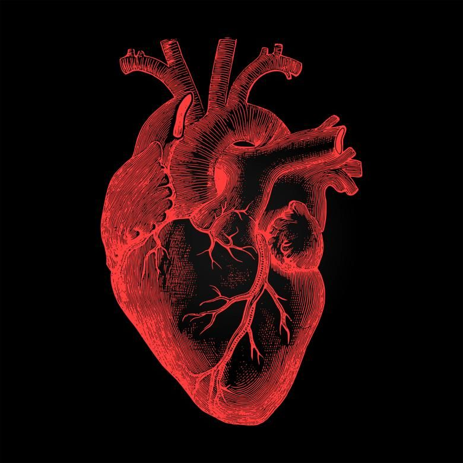

About Me
I am a second year medical student studying in thoothukudi government medical college in tamilnadu,india
Cardiothoracic surgery
A cardiac surgery residency typically comprises anywhere from 4 to 6 years (or longer) of training to become a fully qualified surgeon. Cardiac surgery training may be combined with thoracic surgery and / or vascular surgery and called cardiovascular (CV) / cardiothoracic (CT) / cardiovascular thoracic (CVT) surgery. Cardiac surgeons may enter a cardiac surgery residency directly from medical school, or first complete a general surgery residency followed by a fellowship. Cardiac surgeons may further sub-specialize cardiac surgery by doing a fellowship in a variety of topics including: pediatric cardiac surgery, cardiac transplantation, adult acquired heart disease, weak heart issues, and many more problems in the heart.